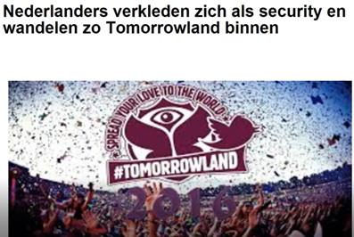
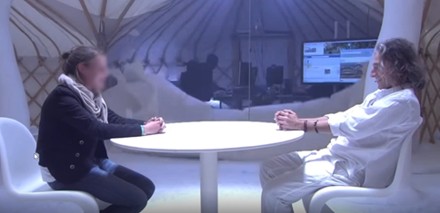
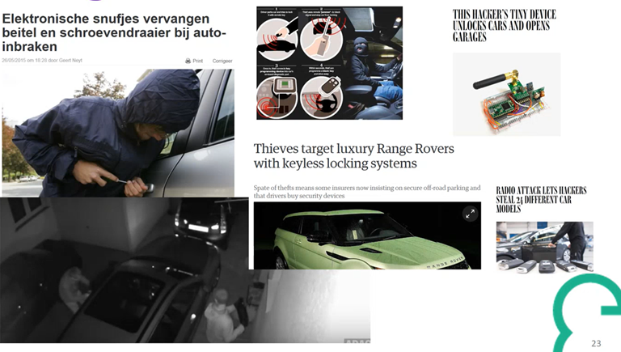
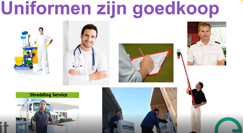

Seminarie 3-IT: Social Engineering
Dit seminarie is een seminarie van de organisatie 3it, verteld door Toon Peeters. Het vertelt over de onbewuste gedragingen van mensen. Het doel van dit seminarie is bewuster omgaan met de dingen die rondom je gebeuren. Hoe wapen je jezelf tegen social engineering?
Ik volgde dit seminarie om bij te leren over social engineering en te ontdekken wat je hiertegen kan doen.
Social engineering komt niet alleen voor in de IT-wereld. Dit onderwerp is eerder een algemene kwestie dat zich voordoet bij de mens. Het is niet iets wat stapsgewijs kan uitgevoerd worden, maar eerder een principe dat zich aanpast aan de situatie.

Er worden dit seminarie een heleboel voorbeelden gegeven, om duidelijk te maken wat social engineering zoal inhoudt. Ik ga deze voorbeelden hieronder bespreken.
Per definitie is social engineering psychologische manipulatie van mensen om ze acties te laten uitvoeren of informatie vrij te geven.
Een eerste voorbeeld dat werd verteld is een filmpje van Nederlanders die verkleed in een security-uniform Tomorrowland betreden. Wat in dit filmpje duidelijk wordt, is dat je met voldoende zelfvertrouwen en een simpel uniform al heel wat mensen kunt manipuleren.
Een interessante uitdrukking van de verteller: “Een beveiliging is maar zo sterk als de zwakste schakel. De zwakste schakel is vaak
een gedraging van de mens.”
Een andere categorie waar gebruikt kan maken van social engineering is sociale media. Bijna iedereen gebruikt het tegenwoordig, en heel wat mensen plaatsen zaken dat niet iedereen hoeft te weten.
Zo komen we bij een tweede voorbeeld. Er wordt een filmpje getoond uit Brussel waar willekeurige mensen gevraagd worden om hun gedachten te laten lezen. Terwijl deze personen tegenover de gedachtelezer zitten, wordt er heel wat informatie verteld. De gedachtelezer weet hun rekeningnummer, de kleur van hun voertuig, de naam van hun partner, hun adres,…
Op het einde wordt onthult hoe er een team van hackers achter een doek al deze informatie vindt op hun sociale media en dit vervolgens doorvertelt aan de gedachtelezer. Zo wordt duidelijk gemaakt dat er heel wat zaken op sociale media staan waar niemand zaken mee heeft.

Het volgende onderwerp is nepmails. Je moet jezelf hierop trainen om te achterhalen of een e-mail nep of echt is.
Toon vertelde ons dat als hij de dag voor dit seminarie gevraagd had om een bestand te downloaden, een groot deel van de studenten dit waarschijnlijk had gedownload zonder hier verdere vragen bij te stellen. Dit is een manier van mensen naar je hand zetten. Je laat mensen dingen doen die ze anders niet zouden doen.
De oorzaak hiervan ligt aan drie eigenschappen:
· Luiheid: Mensen zijn lui, maar dit kan gevaarlijk zijn.
· Nieuwsgierigheid: Mensen zijn heel nieuwsgierig, ze willen weten wat erachter zit.
· Dom/naïef: Mensen denken vaak, wat kan er gebeuren?
Deze drie eigenschappen maken je een makkelijk slachtoffer van social engineering. De problemen die hierdoor veroorzaakt worden zijn:
· Extra beveiliging, bijvoorbeeld 2FA; Dit vinden mensen vervelend om steeds opnieuw in te vullen.
· IT’ers, IT’ers denken vaak dat het hun niet zou overkomen, ze zijn wat overmoedig.
Het probleem wordt opgesplitst in twee delen:


Design
Een voorbeeld van design is de evolutie van oude naar nieuwe autosleutels. Tegenwoordig bestaan er contactloze sleutels, maar de beveiliging van deze sleutels is een groot probleem.
Zo wordt er een video getoond waarin te zien is dat het signaal van zulke sleutels versterkt kan worden met een simpel toestelletje waardoor het onveilig is om de auto onbewaakt te laten. Ook wordt er een video getoond waar er een diefstal te zien is van een auto met zo’n contactloze sleutel.
Er zijn zelfs verzekeringsmaatschappijen dat geen verzekering willen afsluiten voor een voortuig met een contactloze sleutel, als dit voortuig niet in een afgesloten ruimte kan geplaatst worden.
De problemen bij het design zijn bijgevolg:
· Een idee is onvoldoende uitgedacht.
· Een product moet werken.
· Er moeten oplossingen gezocht worden met betrekking tot security.
Uitvoer/gedrag
Een probleem bij de uitvoering of het gedrag is bijvoorbeeld hulp via een helpdesk.
Een voorbeeld dat gegeven wordt is bellen naar een provider en toegang verkrijgen tot iemand anders zijn account met enkel de naam van die persoon. Er wordt een video getoond waarin een vrouw op slechts enkele minuten volledige toegang verkrijgt tot het account van een persoon.
Naar wat moet je nu kijken bij social engineering? Vaak zijn het niet de mensen die eruitzien zoals een stereotype crimineel, maar juist de mensen die er doodnormaal uitzien.
Hackers gaan steeds professioneler tewerk, ze draaien als een normaal bedrijf. Wanneer er bijvoorbeeld een virus op je computer terechtkomt, voorzien ze een supportlijn om je te assisteren.
